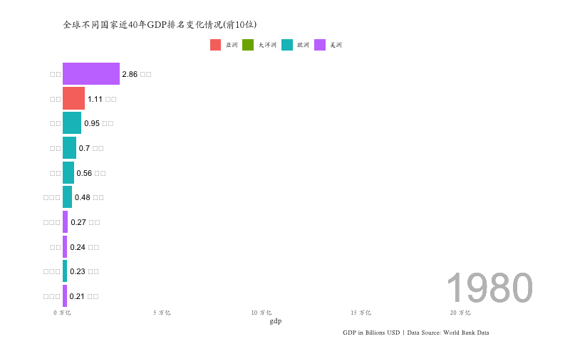

R语言ggplot2包和gganimate包绘制动态追逐条形图(chasing barchart)
2022年5月4日
R
科研作图
最近动态条形图或者称之为追逐条形图在社交媒体上比较火，最常见的是世界各个国家的GDP排名随着时间（以年为单位）变化的情况，通过它可以明显的看到中国的GDP排名从前10名开外逐渐上升到全球第二名的位置。热爱数据可视化的小伙伴们也在想着如何制作这样酷炫的图呢？今天这篇文章的目的就是介绍如何利用R语言绘制这样的动态条形图。
1 用到哪些R包？
- ggplot2
- gganimate
ggplot2包和gganimate包是两个主要用到的包，但是我们在数据整理过程中还用到了tidyverse、janitor和scales包。
2 数据准备
作者在互联网上收集了从1980年以来全球前10位国家的GDP数据，数据，点击下载以CSV的形式保存。
我们把数据读入到R环境中，总共有4个变量，year年份、country国家、continent大洲、gdp，下面看下数据的结构，这个数据已经是ggplot2绘图所需要的长数据格式，所以不需要进行特别的转换了。
3 绘制动态条形图
绘制动态条形图实际需要两个部分，
- 利用ggplot2绘制历年的静态图
- 利用gganimate包把静态图动起来
前面我们已经准备好了绘图的数据，那么我们就先绘制动态条形图每个画面的静态图。我们准备基于GDP的排名展示位于全球前10位的国家，我们需要绘制每年的排名情况。
library(ggplot2)
plot <- data1 %>%
ggplot() +
geom_col(aes(ranking,gdp,fill=continent)) +
geom_text(aes(ranking,gdp,label=paste(round(gdp/1000000000000,2),"万亿")), hjust=-0.1) +
geom_text(aes(ranking,y=0,label=country), hjust=1.1) +
geom_text(aes(x=10, y=max(gdp) , label = as.factor(year)), vjust = 0.2, alpha = 0.5, col = "gray", size = 20) +
scale_y_continuous(label=function(x) paste(round(x/1000000000000,2),"万亿"))+
coord_flip(clip = "off", expand = FALSE) + scale_x_reverse() +
theme_minimal() +
theme(
panel.grid = element_blank(),
legend.position = "top",
legend.title=element_blank(),
axis.ticks.y = element_blank(),
axis.title.y = element_blank(),
axis.text.y = element_blank(),
plot.margin = margin(1, 4, 1, 3, "cm"),
text = element_text(family='Kai')
) 上面的代码绘制了动态条形图的每一个画面，也就是每一年的全球GDP排名前10的国家的条形图。当然你也可以对上面的代码进行更改，从而使图更加美观。而进行动态化的关键步骤是使用gganimate包的transition_states()功能，下面的代码使绘制的图按照year这个变量动态变化。
library(gganimate)
plot2<-plot+transition_states(year, state_length = 0, transition_length = 2) +
labs(title = '全球不同国家近40年GDP排名变化情况(前10位)',
caption = "GDP in Billions USD | Data Source: World Bank Data")+
enter_fade() +
exit_fade() +
ease_aes('quadratic-in-out')
animate(plot2, width = 800, height = 500, fps = 25, duration = 15, rewind = FALSE)
anim_save("pp.gif")
4 小结
我们已经成功的绘制了全球gdp前10的国家在过去40年里动态变化的过程，而只要按照我们前面的准备的数据格式整理自己的数据，那么也很容易地能套用这个代码，从而实现自己的动态条形图。